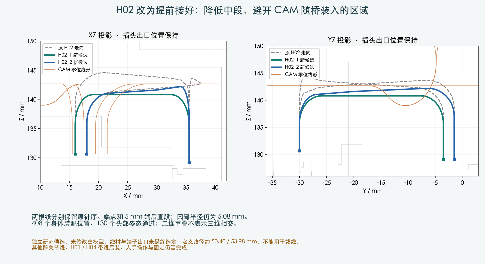

独立研究 · M1.47 主模型保持
H02 提前接好，减少后装绕行
完整线束仍未完成。这次解决 H02 的候选走向与部分工序；线长是几何参考，不是裁线单。
先纠正裸插头路径的边界
把已有导线接上后，部分路径超出现有名义长度。表中的 PASS 仅表示必要长度下界没有超限，不代表导线已经能通过结构；BLOCKED 仅针对保存的路径和该长度。
| 线束 | 只移动起端 | 只移动末端 | 两端均到原外部位置 |
|---|
| H01 | PASS | PASS | PASS |
| H02 | BLOCKED | BLOCKED | PASS |
| H04 | BLOCKED | PASS | BLOCKED |
H02 两端外部位置本身够长，但81×81个有限协调进度中没有找到可行顺序；H04 两端外移时最多差约40.44mm。因此继续用原裸插头路径不能放行整束装配。
H02 保持接口，降低中段

接口针序、两端5mm直段和R5.08mm圆弯保持，不改结构。参考路径约50.40 /53.98mm；端接、实物公差与维护余量仍需确定。
209件源零件、29个插头预留及其他12根身体导线参与静态检查。H02两线间隙保守下界约0.613mm。
候选顺序与复核
先在开敞机身装H03、H02，再装CAM四线与承重桥，H01/H04最后处理。H02完整线形连同两端插头的竖直装入通过201个有限位置；随后身体工序408个位置通过，130个头部姿态未检出新增实体相交。
仍缺 H01/H04 带线工序、固定与扎带、人手工具、后续头部线尾和其余线束。研究使用未采用的颈部/头托候选，有限位置检查不等于连续或实物装配通过。